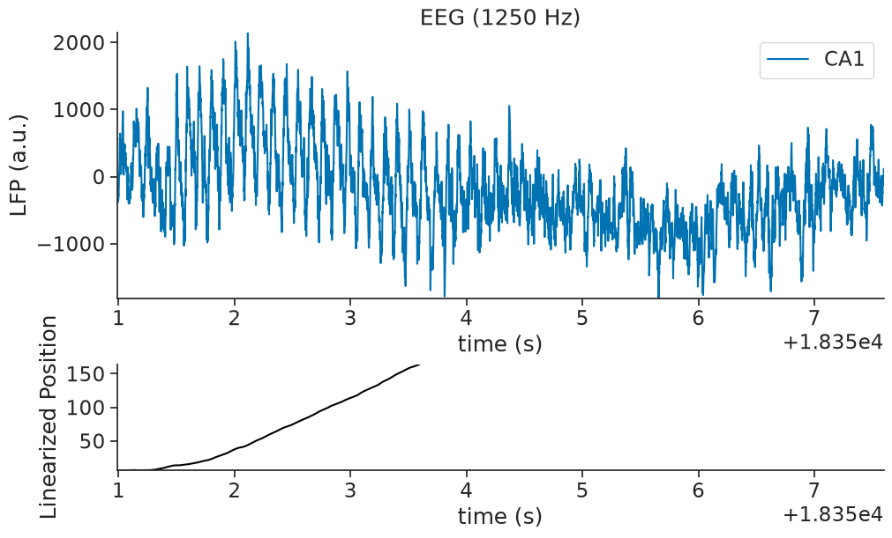
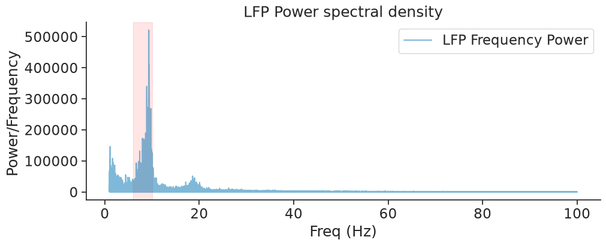
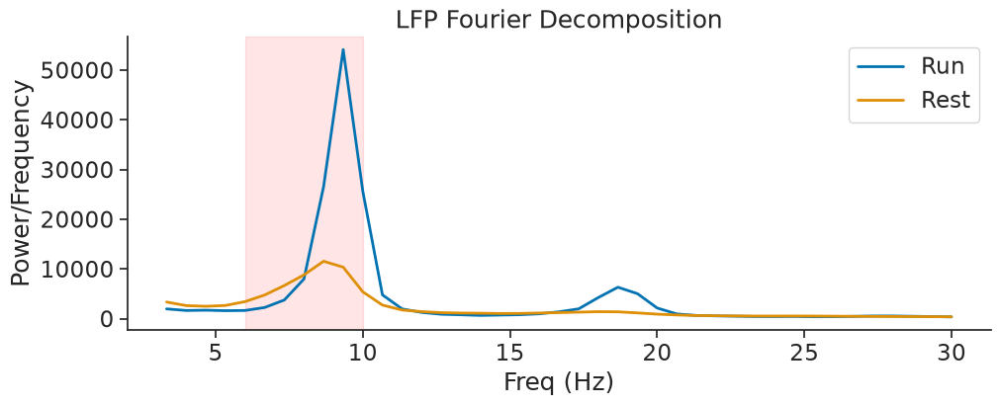
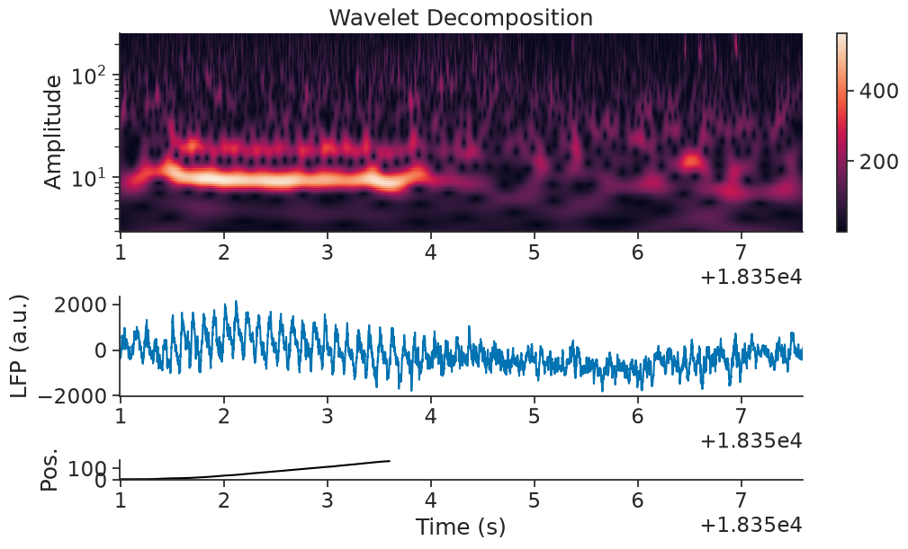
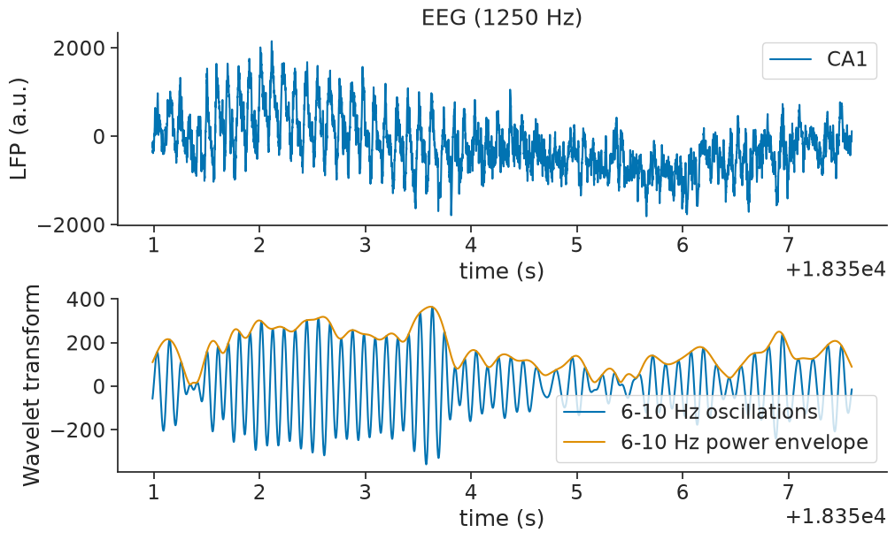

Wavelet Transform#
This tutorial demonstrates how we can use the signal processing tools within Pynapple to aid with data analysis. We will examine the dataset from Grosmark & Buzsáki (2016).
Specifically, we will examine Local Field Potential data from a period of active traversal of a linear track.
Downloading the data#
Let’s download the data and save it locally
path = "Achilles_10252013_EEG.nwb"
if path not in os.listdir("."):
r = requests.get(f"https://osf.io/2dfvp/download", stream=True)
block_size = 1024 * 1024
with open(path, "wb") as f:
for data in r.iter_content(block_size):
f.write(data)
# Let's load and print the full dataset.
data = nap.load_file(path)
print(data)
Achilles_10252013_EEG
┍━━━━━━━━━━━━━┯━━━━━━━━━━━━━┑
│ Keys │ Type │
┝━━━━━━━━━━━━━┿━━━━━━━━━━━━━┥
│ units │ TsGroup │
│ rem │ IntervalSet │
│ nrem │ IntervalSet │
│ forward_ep │ IntervalSet │
│ eeg │ TsdFrame │
│ theta_phase │ Tsd │
│ position │ Tsd │
┕━━━━━━━━━━━━━┷━━━━━━━━━━━━━┙
First we can extract the data from the NWB. The local field potential has been downsampled to 1250Hz. We will call it eeg.
The time_support of the object data['position'] contains the interval for which the rat was running along the linear track. We will call it wake_ep.
FS = 1250
eeg = data["eeg"]
wake_ep = data["position"].time_support
Selecting example#
We will consider a single run of the experiment - where the rodent completes a full traversal of the linear track, followed by 4 seconds of post-traversal activity.
forward_ep = data["forward_ep"]
RUN_interval = nap.IntervalSet(forward_ep.start[7], forward_ep.end[7] + 4.0)
eeg_example = eeg.restrict(RUN_interval)[:, 0]
pos_example = data["position"].restrict(RUN_interval)
Plotting the LFP and Behavioural Activity#
fig = plt.figure(constrained_layout=True, figsize=(10, 6))
axd = fig.subplot_mosaic(
[["ephys"], ["pos"]],
height_ratios=[1, 0.4],
)
axd["ephys"].plot(eeg_example, label="CA1")
axd["ephys"].set_title("EEG (1250 Hz)")
axd["ephys"].set_ylabel("LFP (a.u.)")
axd["ephys"].set_xlabel("time (s)")
axd["ephys"].margins(0)
axd["ephys"].legend()
axd["pos"].plot(pos_example, color="black")
axd["pos"].margins(0)
axd["pos"].set_xlabel("time (s)")
axd["pos"].set_ylabel("Linearized Position")
axd["pos"].set_xlim(RUN_interval[0, 0], RUN_interval[0, 1]);

In the top panel, we can see the lfp trace as a function of time, and on the bottom the mouse position on the linear track as a function of time. Position 0 and 1 correspond to the start and end of the trial respectively.
Getting the LFP Spectrogram#
Let’s take the Fourier transform of our data to get an initial insight into the dominant frequencies during exploration (wake_ep).
power = nap.compute_power_spectral_density(eeg, fs=FS, ep=wake_ep)
print(power)
0
0.000000 18586.820026
0.000484 32072.236070
0.000967 8753.734627
0.001451 24621.247397
0.001935 20725.314831
... ...
624.997582 1.054274
624.998065 0.278790
624.998549 0.609842
624.999033 1.418698
624.999516 3.104718
[1292172 rows x 1 columns]
The returned object is a pandas dataframe which uses frequencies as indexes and spectral power as values.
Let’s plot the power between 1 and 100 Hz.
fig, ax = plt.subplots(1, constrained_layout=True, figsize=(10, 4))
ax.plot(
power[(power.index >= 1.0) & (power.index <= 100)],
alpha=0.5,
label="LFP Frequency Power",
)
ax.axvspan(6, 10, color="red", alpha=0.1)
ax.set_xlabel("Freq (Hz)")
ax.set_ylabel("Power/Frequency ")
ax.set_title("LFP Power spectral density")
ax.legend();

The red area outlines the theta rhythm (6-10 Hz) which is proeminent in hippocampal LFP.
Hippocampal theta rhythm appears mostly when the animal is running (Hasselmo & Stern, 2014).
We can check it here by separating the wake epochs (wake_ep) into run epochs (run_ep) and rest epochs (rest_ep).
# The run epoch is the portion of the data for which we have position data
run_ep = data["position"].dropna().find_support(1)
# The rest epoch is the data at all points where we do not have position data
rest_ep = wake_ep.set_diff(run_ep)
run_ep and rest_ep are IntervalSet with discontinuous epoch.
The function nap.compute_power_spectral_density takes signal with a single epoch to avoid artefacts between epochs jumps.
To compare run_ep with rest_ep, we can use the function nap.compute_mean_power_spectral_density which average the FFT over multiple epochs of same duration. The parameter interval_size controls the duration of those epochs.
In this case, interval_size is equal to 1.5 seconds.
power_run = nap.compute_mean_power_spectral_density(
eeg, 1.5, fs=FS, ep=run_ep
)
power_rest = nap.compute_mean_power_spectral_density(
eeg, 1.5, fs=FS, ep=rest_ep
)
power_run and power_rest are the power spectral density when the animal is respectively running and resting.
fig, ax = plt.subplots(1, constrained_layout=True, figsize=(10, 4))
ax.plot(
power_run[(power_run.index >= 3.0) & (power_run.index <= 30)],
alpha=1,
label="Run",
linewidth=2,
)
ax.plot(
power_rest[(power_rest.index >= 3.0) & (power_rest.index <= 30)],
alpha=1,
label="Rest",
linewidth=2,
)
ax.axvspan(6, 10, color="red", alpha=0.1)
ax.set_xlabel("Freq (Hz)")
ax.set_ylabel("Power/Frequency")
ax.set_title("LFP Fourier Decomposition")
ax.legend();

Getting the Wavelet Decomposition#
Overall, the prominent frequencies in the data vary over time. The LFP characteristics may be different when the animal is running along the track, and when it is finished. Let’s generate a wavelet decomposition to look more closely at the changing frequency powers over time.
# We must define the frequency set that we'd like to use for our decomposition
freqs = np.geomspace(3, 250, 100)
Compute and print the wavelet transform on our LFP data
mwt_RUN = nap.compute_wavelet_transform(eeg_example, fs=FS, freqs=freqs)
mwt_RUN is a TsdFrame with each column being the convolution with one wavelet at a particular frequency.
print(mwt_RUN)
Time (s) 3.0 3.1370646170253313 3.280391470464097 3.4302666706615383 3.5869893998311992 ...
---------- ----------------------------------------- ----------------------------------------- ----------------------------------------- ----------------------------------------- ----------------------------------------- -----
18350.9872 (-29.513845027616068+26.12458899701024j) (-17.786759849997907+26.6352799015746j) (-7.108310629074729+24.69420806397255j) (1.8806670258153668+20.839396666675036j) (8.98942811690332+15.92629270092922j) ...
18350.988 (-29.95694528106066+25.83433824616639j) (-18.219686706318797+26.508128508906367j) (-7.494831518562221+24.72014939651358j) (1.567390039749699+20.997567698210307j) (8.768415117500313+16.196772013029193j) ...
18350.9888 (-30.397150673280674+25.53701903352415j) (-18.653139834267012+26.374541614370525j) (-7.885381351835333+24.740072286673005j) (1.24833585613806+21.153505622779278j) (8.540982312879184+16.464954096030436j) ...
18350.9896 (-30.835384591579928+25.232817531187724j) (-19.08528458954918+26.234254972825276j) (-8.276773512891717+24.754186513942635j) (0.9288426790877624+21.304898581352823j) (8.308156480164921+16.729109219970727j) ...
18350.9904 (-31.27103369041108+24.921842002394577j) (-19.518613543989588+26.085886648523022j) (-8.670136515062191+24.763105512036105j) (0.6049499196783779+21.450716740428042j) (8.067806353856454+16.99085450618748j) ...
18350.9912 (-31.704821580126314+24.603958830962704j) (-19.95105060423424+25.93161421345413j) (-9.065785321783663+24.765319685341396j) (0.27383772220006936+21.59088870322804j) (7.820630485456655+17.249598452508867j) ...
18350.992 (-32.13587933703976+24.278489374045556j) (-20.38186914165838+25.772307646264395j) (-9.465039782526022+24.761122271668015j) (-0.06348323561786291+21.7283298695868j) (7.567651001007957+17.504510208217624j) ...
... ...
18357.5928 (-20.628583836874917+41.37714640357987j) (-26.809576247387184+34.10337602114444j) (-29.96026576917308+27.096962333823726j) (-30.893641534587115+20.81540094262436j) (-30.253723607591613+15.44986833487629j) ...
18357.5936 (-21.172335532550854+40.960175503791746j) (-27.24755504030376+33.60611727739811j) (-30.301784138322112+26.56044440334961j) (-31.150159770373186+20.270064279808985j) (-30.44520279887361+14.917843758353623j) ...
18357.5944 (-21.70739282847001+40.5375461624693j) (-27.67628604871889+33.10533586013797j) (-30.63302324264609+26.02095942119314j) (-31.396442861366808+19.72263395589886j) (-30.627535973750167+14.384382076160813j) ...
18357.5952 (-22.23514598055405+40.10735754788177j) (-28.09515146009654+32.59783973880837j) (-30.95365760777626+25.477695292900425j) (-31.633865002805358+19.173067895301998j) (-30.79913362522013+13.850133660318896j) ...
18357.596 (-22.75464940844611+39.669046287999514j) (-28.506086807583216+32.08548721338842j) (-31.265322576580875+24.930061866554542j) (-31.86356134127396+18.619852495727418j) (-30.961135491073843+13.314113616921718j) ...
18357.5968 (-23.264811612850643+39.2252636741687j) (-28.90940115120036+31.56721406099095j) (-31.569527188026683+24.377996707043245j) (-32.08248525885104+18.06389096641133j) (-31.115267849663937+12.773886226407559j) ...
18357.5976 (-23.7684489513212+38.77457252545401j) (-29.30191668578987+31.045510561950493j) (-31.8634581900864+23.82374021417291j) (-32.29080138950742+17.505758485262188j) (-31.260737989709757+12.232567747753773j) ...
dtype: complex128, shape: (8264, 100)
Now let’s plot it.
fig = plt.figure(constrained_layout=True, figsize=(10, 6))
gs = plt.GridSpec(3, 1, figure=fig, height_ratios=[1.0, 0.5, 0.1])
ax0 = plt.subplot(gs[0, 0])
pcmesh = ax0.pcolormesh(mwt_RUN.t, freqs, np.transpose(np.abs(mwt_RUN)))
ax0.grid(False)
ax0.set_yscale("log")
ax0.set_title("Wavelet Decomposition")
ax0.set_ylabel("Frequency (Hz)")
cbar = plt.colorbar(pcmesh, ax=ax0, orientation="vertical")
ax0.set_ylabel("Amplitude")
ax1 = plt.subplot(gs[1, 0], sharex=ax0)
ax1.plot(eeg_example)
ax1.set_ylabel("LFP (a.u.)")
ax1 = plt.subplot(gs[2, 0], sharex=ax0)
ax1.plot(pos_example, color="black")
ax1.set_xlabel("Time (s)")
ax1.set_ylabel("Pos.");

Visualizing Theta Band Power#
There seems to be a strong theta frequency present in the data during the maze traversal. Let’s plot the estimated 6-10Hz component of the wavelet decomposition on top of our data, and see how well they match up.
theta_freq_index = np.logical_and(freqs > 6, freqs < 10)
# Extract its real component, as well as its power envelope
theta_band_reconstruction = np.mean(mwt_RUN[:, theta_freq_index], 1)
theta_band_power_envelope = np.abs(theta_band_reconstruction)
Now let’s visualise the theta band component of the signal over time.
fig = plt.figure(constrained_layout=True, figsize=(10, 6))
gs = plt.GridSpec(2, 1, figure=fig, height_ratios=[1.0, 0.9])
ax0 = plt.subplot(gs[0, 0])
ax0.plot(eeg_example, label="CA1")
ax0.set_title("EEG (1250 Hz)")
ax0.set_ylabel("LFP (a.u.)")
ax0.set_xlabel("time (s)")
ax0.legend()
ax1 = plt.subplot(gs[1, 0])
ax1.plot(np.real(theta_band_reconstruction), label="6-10 Hz oscillations")
ax1.plot(theta_band_power_envelope, label="6-10 Hz power envelope")
ax1.set_xlabel("time (s)")
ax1.set_ylabel("Wavelet transform")
ax1.legend();

We observe that the theta power is far stronger during the first 4 seconds of the dataset, during which the rat is traversing the linear track.
There also seem to be peaks in the 200Hz frequency power after traversal of thew maze is complete. Those events are called sharp-waves ripples, take a look at the tutorial on sharp-wave ripples to find out more about them!
Authors
Kipp Freud
Guillaume Viejo